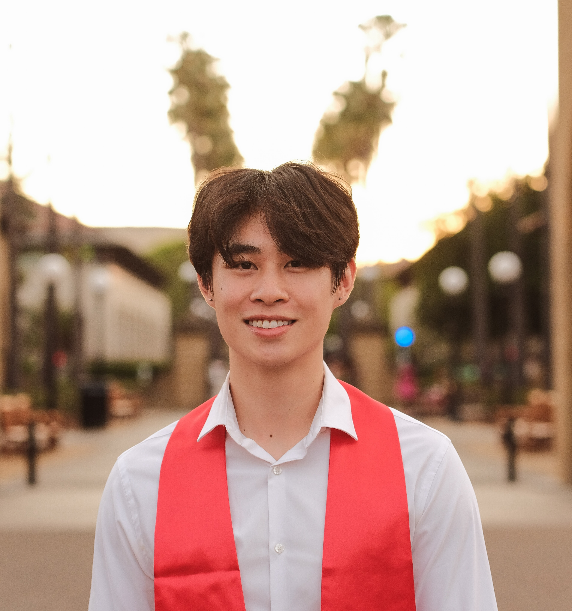

I am a creative technologist specializing in artist-facing audio tools, data sonification, and interactive audiovisual systems.
I designed this website as a portfolio to showcase my interests, projects, and background. Check out my Highlights for examples of research in sound, as well as installations and performances.

React.js, D3.js, Data Visualization
June 2025 | Advisor: Prof Nilam Ram
Interactive platform for exploring EEG studies on music perception. Curated 44 studies, 197 conditions, 13 datasets. Wrote accompanying paper on methodological transitions in EEG-based music research.
View on The Change Lab →Python, PyTorch, BiLSTM, ONNX
Summer 2025 | TU Berlin | Prof. Weinzierl
First-author research on deep learning onset detection. BiLSTM RNN achieves 86.5% F1 on 2,107 files, outperforming librosa (74.2%) and energy-based methods (83.2%).
Project Details →Python, JAX, SciPy, MATLAB
Aug - Dec 2024 | CCRMA | Prof. Slaney
Co-authored Python implementation of TVL2018 Loudness Model with Binaural Inhibition. Translated from MATLAB with NumPy, JAX, SciPy optimizations.
Python, MATLAB, EEG Analysis
Aug - Dec 2024 | Stanford CCRMA
Reconstructed backward TRF model from MAD-EEG dataset. Predicts which instrument a listener focuses on in polyphonic music from EEG data.
GitHubMAX/MSP, Projection Mapping
March 2025 | Prof. Constantin Basica
Interactive installation with projection mapping, contact mics, audio generation, and particle visuals in CCRMA's Listening Room.
MAX/MSP, Logic Pro X
June 2025 | Prof. Constantin Basica
AV performance exploring sound, FX, and audio-reactive particles. Begins with a knock, expands into synced visuals. Live audiovisual performance built around rhythmic triggers and evolving FX chains, driving audio-reactive particle behavior in real time.
MAX/MSP, Logic Pro X
May 2025 | w/ Gracielly Abreu
Collaborative live AV set using MAX/MSP sequencing and arpeggiation to drive reactive visuals, exploring density, overload, and urban noise.
Python, Data Sonification
March 2025 | Ensemble Performance
NASA wildfire and wind data from 2025 LA fires transformed into musical performance.
Logic Pro X, Production
2020 - 2025
Original electronic music showcasing composition, sound design, and audio engineering.
Interdisciplinary courses in technology, media, and human communication. Hover over courses to see relevant skills.
Relevant Coursework:
Technical Skills:
Independent Research under Malcolm Slaney. Studied German and International Politics. Enriched international perspective on music technology and digital arts in Berlin's innovative culture and music scene.
Python, PyTorch, ONNX, BiLSTM
TU Berlin | Summer 2025 | Prof. Weinzierl
First-author research on onset detection for functional (UI/UX) sounds. BiLSTM RNN achieves 86.5% F1, outperforming librosa (74.2%) and energy-based methods (83.2%) under consistent timing tolerance.
Project DetailsReact, D3.js, Data Visualization
Capstone | Mar - Jun 2025 | Prof. Ram
Full-length paper "The Evolution of EEG-Based Music Research" analyzing methodological transitions from 1970s to present. Aggregated 44 studies with 197 conditions examining paradigm shifts in music cognition research methodology.
Python, JAX, SciPy, MATLAB
CCRMA | Aug - Dec 2024 | Prof. Slaney
Co-authored Python implementation of TVL2018 Loudness Model with Binaural Inhibition. Translated from MATLAB with optimizations and testing suite.
Python, MATLAB, EEG Analysis
CCRMA | Aug - Dec 2024 | Prof. Slaney
Reconstructed backward TRF model from MAD-EEG dataset. Predicts which instrument a listener focuses on in polyphonic music mixtures from brain activity.
GitHubMAX/MSP, Logic Pro X
Aug 2025
Chaos attractor particle system with audio reactive parameters, recorded over original music.
MAX/MSP, Logic Pro X
June 2025 | Prof. Constantin Basica
AV performance: begins with a knock and single particle, expands into synced audio-visual sphere. Live audiovisual performance built around rhythmic triggers and evolving FX chains, driving audio-reactive particle behavior in real time.
MAX/MSP, Logic Pro X
May 2025 | w/ Gracielly Abreu
Collaborative live AV set using MAX/MSP sequencing and arpeggiation to drive reactive visuals, exploring density, overload, and urban noise.
Logic Pro X, Foley, Video Editing
April 2025 | Prof. Constantin Basica
AV composition using foley, audio design, and video editing exploring confinement and restlessness.
MAX/MSP, Projection Mapping
March 2025
Interactive sound installation with contact mics, harmonic frequency generation, and particle visuals.
Python, Data Sonification
March 2025 | Ensemble Performance
NASA wildfire and wind data from 2025 LA fires (FRP, Brightness temperature, wind gust speed, etc.) transformed into musical performance.
React, Vite, Tone.js, Canvas
Dec 2025
Interactive web app visualizing and sonifying gradient descent. Particle simulations of SGD, Momentum, Normalized SGD with canvas rendering and audio synthesis.
React, TypeScript, D3.js, Web Audio
Jan 2026
Interactive tool for sensory dissonance based on Plomp-Levelt model. D3.js visualization, Web Audio synthesis, timbre presets, click-to-audition.
React.js, D3.js, CSS
June 2025
React/D3.js platform with interactive timeline, advanced filtering by EEG metrics, electrode configurations, musical stimuli. Built responsive SVG components with dynamic state management and data export.
View on Change Lab →Qiskit, ChucK, Quantum Computing
May 2024
Pipeline that extracts key/pitch features from an input audio file (librosa) and uses Qiskit circuit measurements to drive harmonic choices (frequency ratios, phase offsets, event timing) for ambient generation. Built for MUSIC 222A (CCRMA).
Sound Design, Installation Art, Acoustic Engineering
Jan 2025
Participated in a collaborative realization of David Tudor's electroacoustic environment "Rainforest IV" (1973). Designed and constructed sculptural loudspeakers with unique resonant characteristics. Utilized contact microphones, amplifiers, and sound design in Logic Pro X.
Documentation →A configurable web application for the N-Back cognitive task to measure working memory performance with detailed metrics and data visualization.
View on GitHub →A fast solver for 4×4 Word Hunt games using depth-first search algorithm to find all valid English words that can be formed by connecting letters.
View on GitHub →Automated email system that processes spreadsheet data to send customized emails at scale, handling 22,000 contacts with error tracking and reporting.
View on GitHub →First-author research on onset detection for functional (UI/UX) sounds. BiLSTM RNN achieves 86.5% F1, outperforming librosa (74.2%) and energy-based methods (83.2%) under consistent timing tolerance. Project conducted in collaboration with the Sound Innovation Lab.
Project Details →Managed circulation and database operations for Stanford's Music Library. Assisted patrons with checkouts, returns, and locating materials using music-specific cataloging systems.
Worked closely with the writing team to craft compelling content for Muhammad Yunus's memoir, contributing to the development of a reflective narrative on his life's work and impact.
Increased TikTok followers on @warnerbrostv by 22% through strategic content creation. Management for WB entities' social media accounts. Overall management of 100+ accounts, with a focus on 6.
Successfully negotiated contracts with venues and an artist's management team to organize SCN's New Member Showcase concerts with a $2500 budget.
Live mixing of drums, keyboard, guitars, bass, and vocals. Set up and operation of audio equipment (mics, 32 input Yamaha live mixer, etc.) at Vineyard of Hope Church, Walnut, CA.
Historian: Responsible for collection and protection of the Chapter history through social media, scrapbooks, organized documentation and events.
Selected as a Most Valuable Student Scholar $4,000 Semi-Finalist Elks National Foundation Scholarship.
1,928 students were selected from over 93,000 applicants from across the country.
Poet for anthology created with Amanda Gorman and Kate Deciccio.
Selected as semifinalist in national playwriting competition.
1 of 35 semi-finalists chosen out of 23,000 poetry entries.
Chosen as a semi-finalist out of 432 playwriting submissions.